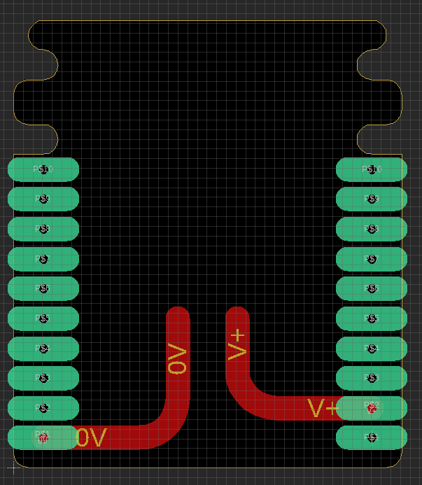
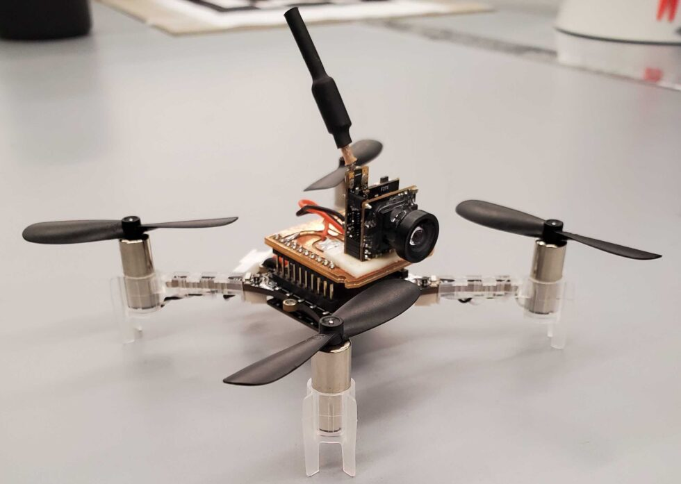

Course description
Robotics is a rapidly growing field with applications including unmanned aerial vehicles, autonomous cars, and robotic manipulators. This course will provide an introduction to the fundamental theoretical and algorithmic principles behind robotic systems. The course will also allow students to get hands-on experience through project-based assignments with the Crazyflie quadrotor. Topics include:
- Feedback Control
- Motion Planning
- State estimation, localization, and mapping
- Computer vision and learning
- Broader topics: Robotics and the law, ethics, and economics
This course is aimed at undergraduate students (primarily juniors and seniors). The graduate-level track (MAE 549) is aimed at first-year PhD students.
Note: this course website is the public-facing version; Princeton students enrolled in the course should use Canvas. This website provides access to course materials including lecture videos, notes, slides, assignments, and the final project (see below).
Instructor
Anirudha Majumdar
Mechanical & Aerospace Engineering, Princeton University
Acknowledgements
The following teaching staff have contributed greatly to the development of the materials for this course: Vincent Pacelli, Julienne LaChance, Jon Prevost, Alec Farid, Meghan Booker, Lena Rosendahl, David Snyder, Allen Ren, Eric Lepowsky, Nate Simon, Alexandra Bodrova, An-Ya Olson, Haoyuan Cai, Dylan Tran, Jiayi Geng, and Alkin Kaz.
Lecture recordings were done by Geovanni Valdivieso (Princeton Broadcast Center).
Reference textbooks
- Steven M. LaValle, Planning Algorithms.
- Sebastian Thrun, Wolfram Burgard, and Dieter Fox, Probabilistic Robotics.
- Mark W. Spong, Seth Hutchinson, and M. Vidyasagar, Robot Dynamics and Control.
- Illah R. Nourbaksh and Roland Siegwart, Introduction to Autonomous Mobile Robots.
Course prerequisites
Multivariable calculus, linear algebra, basic probability, basic differential equations, some programming experience (this course uses Python).
Hardware
The assignments for the course (provided below) include theory, programming, and hardware implementation components. For the hardware, we use the Crazyflie drone from Bitcraze. This is a lightweight drone (27g) with open-source software. The feedback control and motion planning hardware assignments can be completed with the following parts list:
- Crazyflie 2.1 drone
- Flow deck v2
- Crazyflie PA radio
- Spare parts (if necessary)
For the final project, students program the drones to perform vision-based navigation. We attach cameras to the drones, which transmit images in real-time to a receiver unit plugged into to a laptop. Completing the final project requires the following additional parts:
We use a simple PCB for powering the WT05 analog camera. Below is the schematic, and this is the .brd file.

